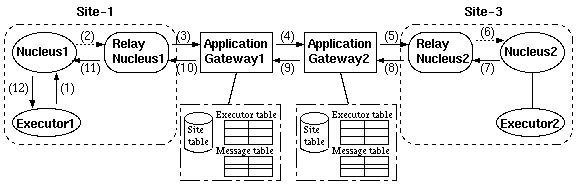
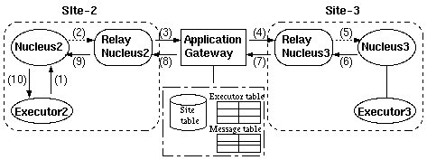

ozag - OZ application gateway
ozag
The application gateway is executed in a gateway machine, and performs the following services to one or more sites:
- relay of executors outside the OZ++ site.
- relay of method invocations and return values, as well as insertion of external flags against external packets, both to and from outside the OZ++ site.
- relay of class file transfer packets both to and from outside the OZ++ site.
If this file does not exist when the application gateway is started, the application gateway loads data of site table from WWW server automatically.
At the first line of the file, the last updated date of the site information is recorded. The site table contains the following items:
The application gateway is started as an OS process from a terminal.
The application gateway creates log files at startup, and its file name appeared on the terminal.
The 'exit' command terminates the application gateway.
Signal(SIGTERM) terminates the application gateway also.
There are two paths for the relay of inter-site communication by the application gateway:
- Relay between a local site and another site (see figure 2.6--1)
Relay is performed between a site managed by the application gateway and the other sites.- Relay inside a local site (see figure 2.6--2)
The application gateway manages several sites, and performs relay within the range of the management.
|  | ||||||||||||
|
||||||||||||
|  | ||||||||||||
| ||||||||||||
The site ID, registered as local site information, must already be registered in the site table.
In the setup of local site information, only the information for one site is described per line of the file. The usage is described below:
<site ID>:<rncl IP-Address>:<rncl port>:<type of site>There are two types of sites: progressive policy sites and conservative policy sites.
Objects in a progressive policy site can be accessed from outside of the site, and can access to objects of other sites. Objects in a conservative policy site can access to objects of other sites, but can not be accessed from outside of the site.
The local site information can be modified using 'add','remove','change' commands. But it's possible to setup the contents of the file directly.
Setup of Local Site Information between a Local Site and Another Site
In this case, the local site information is registered as follows:
Setup of Site-1:
Site-1:<IP-Address of R-Ncl1>:<port of R-Ncl1>:<type of site>
Setup of Site-2:
Site-2:<IP-Address of R-Ncl2>:<port of R-Ncl2>:<type of site>
For example, this information is described as follows:
Local site information of Site-1
% cat $OZROOT/etc/apgw_LSiteInfo
0005:bunax3:3777:C
Local site information of Site-2
% cat $OZROOT/etc/apgw_LSiteInfo
0001:bun13:3777:P
Setup of Local Site Information inside a Local Site
In this case, the local site information is registered as follows:
Site-2:<IP-Address of R-Ncl2>:<port of R-Ncl2>:<type of site>
Site-3:<IP-Address of R-Ncl3>:<port of R-Ncl3>:<type of site>
For example, this information is described as follows:
% cat $OZROOT/etc/apgw_LSiteInfo
0005:bunax3:3777:P
0001:192.31.202.11:3777:P
Setup of a Relay Nucleus
The relay nucleus communicates with the application gateway, and relays the transmission of demands to and reception of demands from other sites.
The setup of a relay nucleus defines the application gateway corresponding to the relay nucleus in the nucleus table.
RELAYNCL:<IP-Address of Relay Nucleus>:<OZAG IP-Address>For those nuclei registered as relay nuclei, it is necessary to maintain mutual consistency between these nuclei and the relay nuclei registered in the local site information of the application gateway.
For example, when the relay nucleus is set to bun13, and the application gateway is set to bunax3:
% cat $OZROOT/etc/apgw_LSiteInfo
0005:bun13:3777:P
% cat $OZROOT/etc/ncl-data/NCL_table
RELAYNCL:bun13:bunax3
The site table ($OZROOT/etc/SITE_table) is the text file read when the application gateway is started. It contains the following items:
<site ID>:<host name or the IP-Address of the application gateway>:
Example:
% cat $OZROOT/etc/SITE_table
#Sunday, 09-Feb-97 06:24:39 GMT
0004:192.33.202.15:
0005:bunax3:
0006:bun17
0007:192.31.202.11:
The application gateway accepts following commands. They can be grouped to three category, site information related, local site information related and miscellaneous.
list
update
local
add
remove
change
help
exit
Site information related commands
List site table. When site_id is specified, list that site if exists, otherwise error message will be desplayed.
Example:
list
========================================
SITE : IP address of application gateway
0010 : bunny
0011 : bunny
0012 : bunny
0020 : bunfs
========================================
list 0020
Site = 0020 : Application gateway = bunfs
list 0023
No such site (0023)
Update site table by getting from master data on WWW server. If site information on WWW server is newer than that on the application gateway, site information will be loaded from WWW server, otherwise the site information will not be changed because it is upto date.
'update' operation is recorded in log file when the site information is updated.
Local site information related commands
List local sites.
Add local site or re-activate local site which is removed previously. "policy" must be 'P' or 'C'.
'add' operation is recorded in log file.
Remove a local site. The id of site is never reused, so that local site treated as temporary invalidation. To reactivate removed site, use add command.
'remove' operation is recorded in log file.
Change policy of a local site. "policy" must be C or P.
'change' operation is recorded in log file.
Examples of 'list','change','remove' commands:
local
----------------------------------------
SITE : policy : relay NCL
0010 : PROGRESSIVE : bun15
0011 : PROGRESSIVE : bun12
0012 : PROGRESSIVE : bun16
----------------------------------------
change 10 C
Local site (0010) changed
local
----------------------------------------
SITE : policy : relay NCL
0010 : CONSERVATIVE : bun15
0011 : PROGRESSIVE : bun12
0012 : PROGRESSIVE : bun16
----------------------------------------
remove 11
Local site (0011) removed
local
----------------------------------------
SITE : policy : relay NCL
0010 : CONSERVATIVE : bun15
0011 : removed temporary : bun12
0012 : PROGRESSIVE : bun16
----------------------------------------
Corresponding log in log file:
[Mon Feb 24 19:47:45 1997] Change local site (0010:C)
[Mon Feb 24 19:48:00 1997] Remove local site (0011)
Miscellaneous commands
Terminate OZ++ application geteway.
Print help message as follows.
** List of Commands **
-- Site List --
list [site_id]
List site table. If site_id is specified, list that site only.
update
Update site table by getting from master data.
-- Local Site --
local
List local sites.
add site_id RNCL_host RNCL_port policy Add a local site.
remove site_id
Remove a local site.
change site_id policy
Change policy of a local site. policy must be C or P.
-- Miscellaneous --
help
Print this help message.
exit
Terminate OZ++ application geteway.
The application gateway records following events in log file with date and time. Log file is placed on $OZROOT/etc/AGxxxxxxxx.log (xxxxxxxx is eight hexadecimal degits to present startup time).
Startup and termination. Begin and end of method invocation relay. Begin and end of file transfer relay. Change of site information and local site information.
Startup and terminatio
The first line and the last line of log will be startup message and termination message.
Example:
[Wed Feb 19 23:52:24 1997] Application Gateway started!
[Thu Feb 20 01:16:59 1997] Application gateway terminated!
Begin and end of method invocation relay
Begin and end of method invocation relay are recorded. OIDs of caller and callee, message_id and class_id are recorded in begin message.
There may exist other messages between begin and end of a method invocation, but corresponding messages have same message id. ("001100100b00000f" is message id in following example).
Example:
[Thu Feb 20 01:12:32 1997] exmessage:New invocation starts:
caller:0x001100100b000005 callee:0x00100010000001a9
class_id:0x0010001000000187 message_id:0x001100100b00000f
[Thu Feb 20 01:12:32 1997] exmessage: invocation 001100100b00000f finished
Begin and end of file transfer relay
Begin and end of file transfer relay are recorded. Sender's executor id and process id of file transfer process OzFGW are recorded.
There may exist other messages between begin and end of a file transfer, but corresponding messages have same process id. ("26335" is process id in following example).
Example:
[Thu Feb 20 01:11:58 1997] DeliverClass: source of file 0010001000000000
(process:26335)
[Thu Feb 20 01:11:59 1997] OzFGW: file_transfer process 26335 finished(0)
Change of site information and local site information
Changes of site information and local site information are recorded as shown in 2.6.6.2 . Invocations to objects in conservative policy sites are rejected and the rejection is recorded also.
Following example shows log of three invocation to same objects, but site of callee objects changes from progressive to conservative and back to progressive again.
Example:
[Thu Feb 20 01:12:33 1997] exmessage:New invocation starts:
caller:0x001100100b000005 callee:0x00100010000001a9
class_id:0x0010001000000187 message_id:0x001100100b000013
[Thu Feb 20 01:12:33 1997] exmessage: invocation 001100100b000013 finished
[Thu Feb 20 01:13:02 1997] Change local site (0010:C)
[Thu Feb 20 01:13:09 1997] exmessage:Reject invocation to conservative
site!
[Thu Feb 20 01:13:38 1997] Change local site (0010:P)
[Thu Feb 20 01:13:42 1997] exmessage:New invocation starts:
caller:0x001100100b000005 callee:0x00100010000001a9
class_id:0x0010001000000187 message_id:0x001100100b000015
[Thu Feb 20 01:13:42 1997] exmessage: invocation 001100100b000015 finished
There may be cases in which the application gateway cannot be started due to some troubles. The following causes may be considered:
- (1)
- The necessary files to start the application gateway cannot be opened.
The following files are necessary to start the application gateway:In this case, the following factors can be considered as causes:
- $OZROOT/etc/SITE_table
- $OZROOT/etc/apgw_LSiteInfo
- Environment variable OZROOT is not set properly.
- Permissions of files under the directory $OZROOT is not given.
- There are errors in the description of the site table ($OZROOT/etc/SITE_table).
- (2)
- The port used by the nucleus cannot be bound.
The following message is displayed:init_apgw_port: bind: Address already in use init_apgw_port: Other APGW start up already ?The following causes may be considered:
- The station, where the start up is performed, already has another application gateway running.
- The port is bound by another application other than the application gateway.
- (3)
- Error in the Setup of Local Site Information
The following message is displayed:init_localsite_info: Can't found LocalSiteID(????) on site-tableThis occurs because the site ID in the local site information is not registered in the site table.